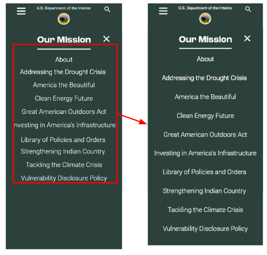
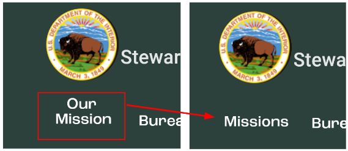
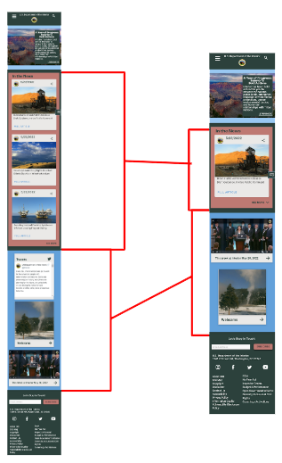

CHALLENGE
To update website based on UX audit
My Role:Product Designer
Collaborators:2
Tools:Figma & WordPress
Timeline:Open/Volunteer Project
Deliverables: Clickable low-fidelity revised navigation prototype in Figma, Usability tests on revised navigation, implementing revised navigation and updated theme to website using WordPress
Original Website
THE PROBLEM
Based on user research the current government website for the Department of Interior is difficult for users to navigate.
The Solution: To reorganize and rename navigation bar links while updating overall aesthetic of site.
Card Sorting for Revised Navigation

USABILITY TESTING
Product Under Test
The redesigned navigation for the DOI is being tested for usability.
Business Case
The revised navigation is being tested to determine if the usability has improved with the new design. The benefit of testing is to confirm whether or not the redesign achieves this.
Participants
7 users were recruited between the ages of 23-34. All subjects had very limited knowledge of the DOI.
Equipment
- Smartphones
- Laptops
- Zoom
- Screen Recorder
User Tasks
- Where would you look for information to volunteer? 90% Success Rate
- How would you go about finding information about the clean energy future initiative? 60% Success Rate
- How would you go about finding media contacts for the DOI? 90% Success Rate
- Where would you look to subscribe to DOI email newsletter? 67% Success Rate
PROTOTYPE REVISIONS
A. Mobile :
User felt sub navigation looked like a paragraph vs separate navigation tabs. Revised by increasing space between tabs.
B. Desktop :
“Our Mission” Led to some confusion. User expected it to just be a mission statement or singular item. Revised tab to “Missions”.
A.
B.
C. Mobile :
User felt there was too much scrolling to reach the bottom of site/footer. Revised “In the News” section to be expandable via a dropdown.
C.
CONCLUSION
Redesigning a government agency website was a great opportunity to focus on navigation for a site with a lot of content. It was interesting to see how different tab names could ultimately add or decrease clicks when users were navigating. This exercise helped to shine a light on the value of user testing and gave me confidence in the iterations that followed. Given more time and resources I would have loved to expand my redesign to more pages of the DOI site.